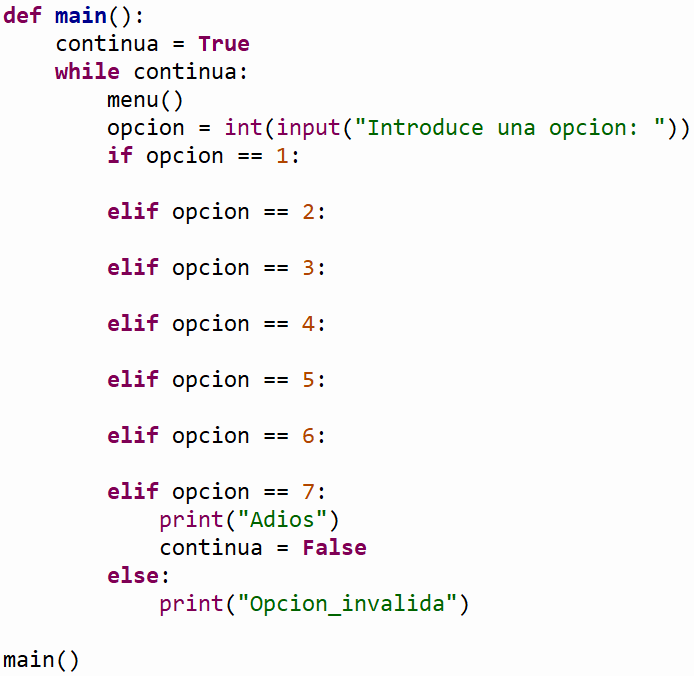

TC1028. Pensamiento computacional para ingeniería . |
|
|
|
. Descripción:
 Objetivos:
Modalidad:

Instrucciones:

Ejercicios:
La función escribir_en_archivo (nombre) que recibe el nombre del archivo de texto. La función deberá pedir al usuario tres oraciones o frases y las agregará en el archivo de texto.La función cuenta_caracteres (nombre) que recibe el nombre del archivo de texto y regrese el número de caracteres contenidos en el archivo de texto, sin incluir espacios en blanco y saltos de línea.La función copia_archivo (nombre_o, nombre_d) que recibe el nombre del archivo de texto origen y el nombre del archivo de texto destino. La función debe copiar todo el contenido del archivo origen al archivo destino, cuyo contenido final será la conversión de los caracteres a mayúscula de cada uno de los caracteres del archivo de origen.La función imprime_archivo (nombre) que recibe el nombre del archivo de texto y muestra en pantalla el contenido del archivo de texto.La función
1. Escribir en archivo
La función main() que utilice la función menu para desplegar el menú correspondiente y de acuerdo a la opción seleccionada por el usuario le dé la oportunidad de ejecutar cualquiera de las funciones que han sido construidas. Utiliza el estatuto de control if anidado. Recuerda que la captura de datos debe ser realizada en la sección del main. Debes utilizar el ciclo while para que se cicle el programa hasta que el usuario introduzca la opción de salir. 
 Especificaciones de entrega:
|